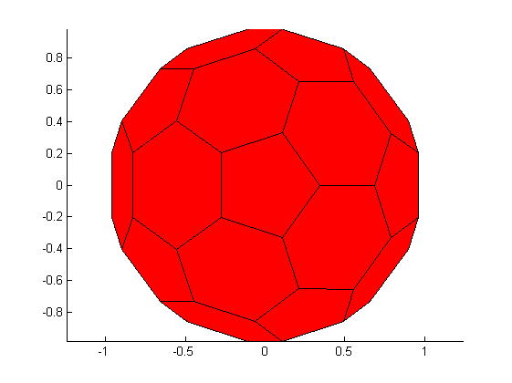
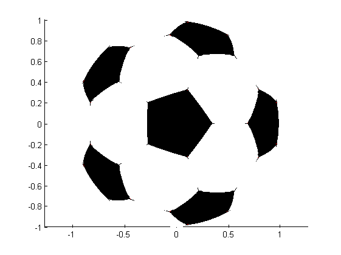
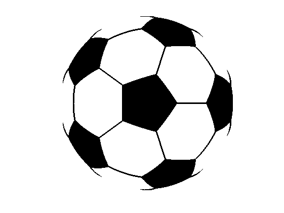

Contents
function drawSoccerBall
%DRAWSOCCERBALL Draw a soccerball using geom3d library % % This demo shows how to use some functions of the geom3d library to % compute and display arcs of a soccer ball. % % In particular, it shows how to: % * create spheres, circles, circle arcs % * create a pre-defined polyhedron % * display 3D shapes % * compute face centroids % * compute intersections of planes, spheres, lines % * draw spherical patches % % Usage: % drawSoccerBall % % % ------ % Author: David Legland % e-mail: david.legland@grignon.inra.fr % Created: 2009-06-22, using Matlab 7.7.0.471 (R2008b) % Copyright 2009 INRA - Cepia Software Platform.
Initialisation
% origin of 3D basis, which is also the soccerball center origin = [0 0 0]; % the bounding sphere of the soccer ball, used for computing circles sphere = [origin 1]; % extract vertices, edges, and faces of soccerball polyhedron [vertices edges faces] = createSoccerBall; % prepare figure figure(1); clf; hold on; axis equal; % draw the polyhedron as basis drawPolyhedron(vertices, faces);
Draw Faces
% For each face, draw a spherical surface, composed of several triangular % patches, with a specific color for f = 1:length(faces) % extract vertices of current face faceVertices = faces{f}; Nvf = length(faceVertices); % compute centroid of face vertices % (See also function faceCentroids) faceCenter = centroid(vertices(faceVertices, :)); % color of the current face (black for pentagons, white for heaxagons) if Nvf == 5 color = 'k'; else color = 'w'; end % compute and display the spherical face associated with each face for i = 1:Nvf % current vertices of face edge vertex1 = vertices(faceVertices(i), :); vertex2 = vertices(faceVertices(mod(i, Nvf)+1), :); % draw a portion of the current face fillSphericalTriangle(sphere, faceCenter, vertex1, vertex2, ... 'faceColor', color); end end
Draw edges
% For each edge, draw a circle arc on the sphere for i = 1:size(edges, 1) % extremities of current edge point1 = vertices(edges(i, 1), :); point2 = vertices(edges(i, 2), :); % compute plane containing current edge plane = createPlane(origin, point1, point2); % intersection of the plane with unit sphere circle = intersectPlaneSphere(plane, sphere); % find the position (in degrees) of the 2 vertices on the circle angle1 = circle3dPosition(point1, circle); angle2 = circle3dPosition(point2, circle); % ensure angles are in right direction if mod(angle2 - angle1 + 360, 360) > 180 tmp = angle1; angle1 = angle2; angle2 = tmp; end % compute angle extent of the circle arc angleExtent = mod(angle2 - angle1 + 360, 360); % create circle arc arc = [circle angle1 angleExtent]; % draw the arc drawCircleArc3d(arc, 'linewidth', 2, 'color', 'k'); end axis off; axis vis3d;